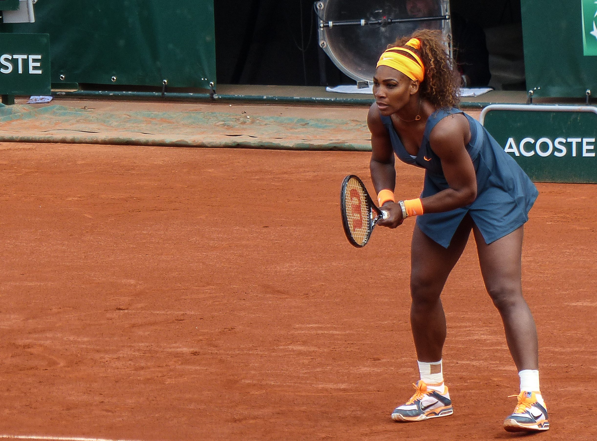
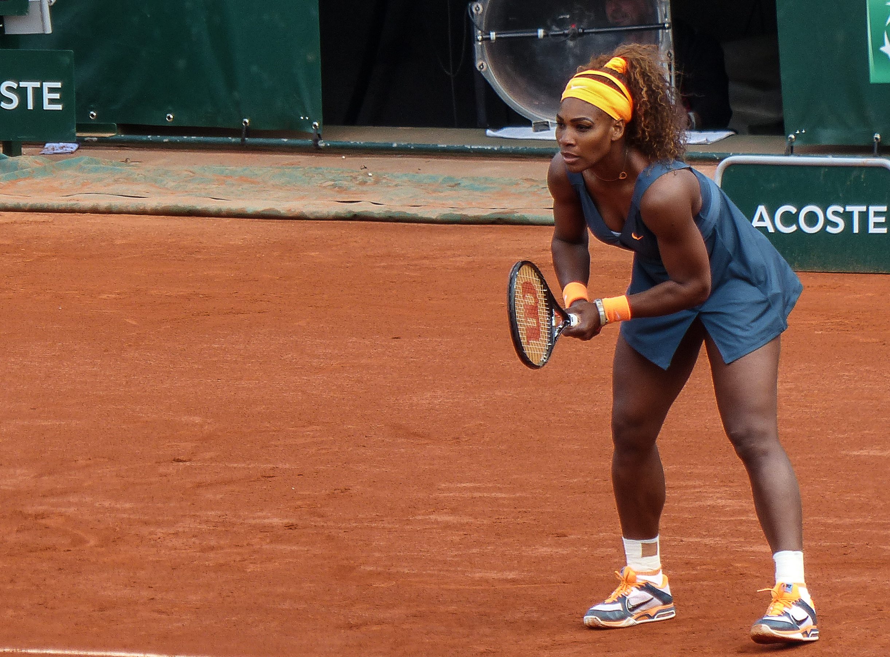
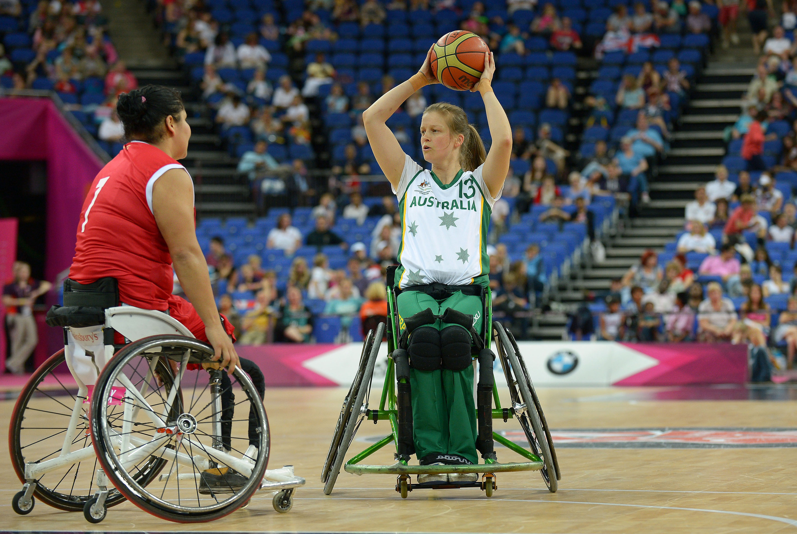
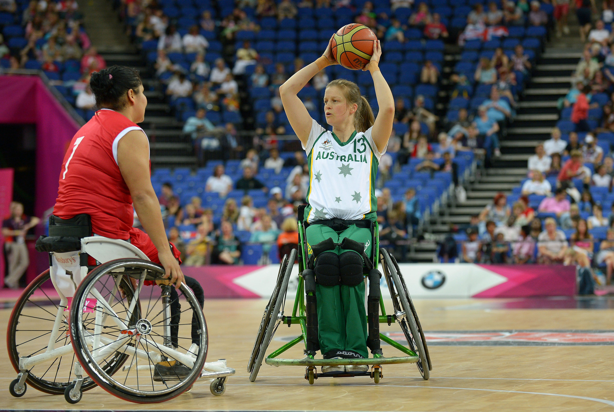

Nutrition Benefits of Plant-Based Diets
Some of the benefits of plant-based diets include:
- Plant based diets allow for faster muscle recovery times because meat and dairy have inflammatory effects.
- Plant-based eaters get more antioxidants, which help neutralize free radicals. Free radicals lead to muscle fatigue, reduced athletic performance, and impaired recovery.
- Plant-based diets are usually lower in fat and higher in fiber which results in reduced body fat. Reduced body fat means that athletes can more efficiently use oxygen during exercise.
- Plant-based diets are better for cardiovascular health.
These benefits are why many of the worlds greatest athletes have switched to plant based diets:
NBA Star Kyrie Irving
GOAT Endurance Runner Scott Jurek
Tennis Champion Venus Williams
Molly Cameron - The only trans athlete to compete in the UCI Cyclo-Cross World Cup.
Colin Kaepernick - NFL
Lewis Hamilton - All Time Greatest Formula One Racers
Sarah Stewart - Silvermedalist Paralympics athlete
Below are pictures taken by me and links to some of my favorite high-protein recipes inspired by vegan chefs that help fuel my runs:
- High-Protein chili
- Chickpea and Kale Stir Fry
- Tofu and Potato Curry

 



 


Images courtesy of Pexels.com